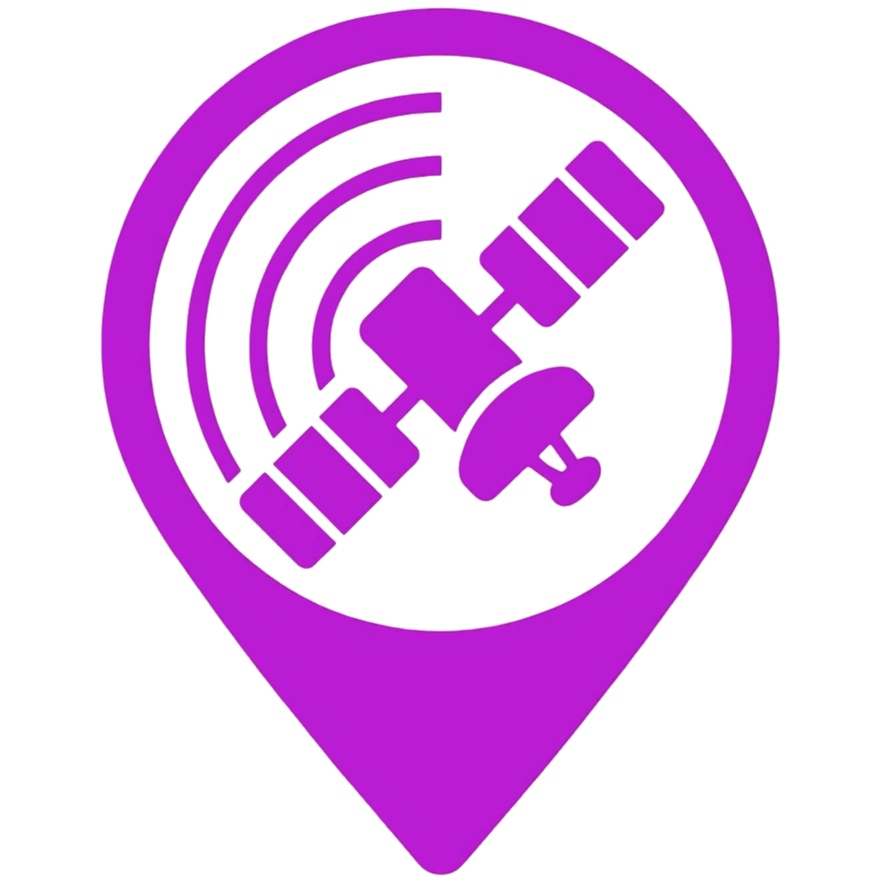

🛰️
'">
SatFleet Live
© 2025 Jaime Guzmán García-Rivera – Personal project
Source:
CelesTrak / NORAD
|
Wikidata
|
Contact
|
Privacy Policy
🌙/☀️ Theme
🌐 ES/EN
← Back to Map
Next Visible Passes from Your Location
📍 Detecting your location...
Days to calculate:
1 day
3 days
7 days
Satellite types:
Relevant satellites (default)
ALL satellites (‼️ Slow, this may take a while...)
GPS / Navigation
Space Stations
Communications
Starlink / Internet (‼️ Slow, this may take a while...)
Military / Spy
Weather / Climate
Geodetic / Tracking
Technology / Experimental
Other / Miscellaneous(‼️ Slow, this may take a while...)
Sort by:
Earliest first
Brightest first
Highest elevation
Longest duration
Action
Calculate Passes
Calculating visible passes...